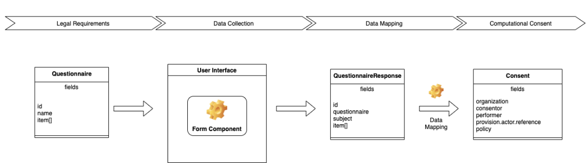

0.1.0 - ci-build
FastAccessControl - Local Development build (v0.1.0). See the Directory of published versions
There have been numerous implementation guides already written that have looked at how to collect consent information by way of advanced directives. This implementation guide takes a slightly different approach from previous work, in that we are specifically interested in computable consent. For this reason, we are generally leaving the discussion of PDF and CDA documents for another time, and assuming that all records are available or will be made available in XML/JSON/Turtle format.
The general FHIR approach to forms and structured data inputs is to recognize that specifications change over time, and to anticipate those changing requirements by encoding the form data in a configuration file known as the FHIR Questionnaire resource.

The Questionnaire resource is then displayed in whatever user interface format the implementer choses. Common design patterns include skeuomorphic forms that replicate white paper documents, dynamic forms showing one question at a time, and interactive chatbots that conversationalize the questionnaire.
Regardless of which user interface is used, the answers provided by the end user are recorded within a QuestionnaireResponse record, referencing the original Questionnaire. This QuestionnaireResponse is generally sent back to the server for storage and processing.
This implementation guide recognizes the following Consent record types. For ease of implementation, examples of these records are provided in the Artifacts section.
One particularly important use case of interest is the mapping between a HIPAA Patient Privacy form and the Consent resourcs.
Consent.dateTimeConsent.provision.period.startConsent.provision.period.endConsent.provision.type (deny)Consent.provision.type (permit)Consent.policyRuleConsent.policy.uriConsent.practitionerConsent.organizationConsent.organizationConsent.provision.actor.referenceConsent.provision.actor.reference